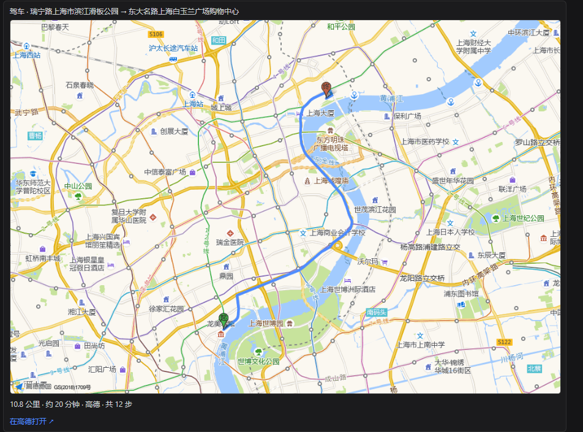

7 个原生工具
走 DSH 的 ctx.tools 注册，不是 MCP，没有额外进程要维护。装一个包就有全部地图能力。
把「路怎么走」变成模型能直接调用的 7 个工具，并把结果画成看得见的地图。不用 MCP，没有额外进程；算出来的路线会出现在最终回答的下方。

六件事决定了它和一个「套壳地图 API」的区别。
走 DSH 的 ctx.tools 注册，不是 MCP，没有额外进程要维护。装一个包就有全部地图能力。
收尾正文之后出现一张真地图：高德底图 + 高德绘制的路线折线 + 起终标注。一轮算了几条就画几条，不会再出现「正文讲 A、地图画 B」。
不配置 key 时，驾车 / 步行 / 骑行走免费的 OSM / OSRM；中文地址解析不可靠时给出明确引导。配置高德 key 后无缝升级到全能力。
静态地图由宿主携带 key 去取，浏览器只加载一张本地图片。key 永不回显到页面或日志。
路线几何与起终点名走 presentationMeta 持久化到会话日志，只用于渲染卡片，不进入模型上下文。
插件只提供工具与卡片，不读模型名、不分模型版本。换任何 DSH 支持的模型或提供方，行为一致。
一次路线问答里，界面会出现三处内容。地图只在最终结果处出现一次 —— 过程区会随思考反复重绘，放在那里就是闪烁。
| 位置 | 内容 | 说明 |
|---|---|---|
| 过程区（「思考」块） | 紧凑摘要 + 可折叠路书 | 不渲染地图，省掉一次取图 |
| 收尾正文 | 距离、耗时、分段指引、「在高德打开 ↗」 | 模型可见文本，模型据此作答 |
| 收尾正文之后（回合尾部） | 路线地图卡：真地图 + 起终点 + 距离 / 耗时 / 步数 + 深链 | 本轮每条路线一张，标注「第 k/N 条」；超过 3 条只显示前 3 条并注明总数 |
运行中 — 显示「规划中…」
成功 + 有几何 — 真地图（高德静态图）
成功但取不到真地图 — 自动退回自绘 SVG 示意图：不请求外部网络、不需要前端 key，路线走向、起终点、距离耗时照常显示
失败 — 显示错误文本，不会被吞掉
距离、耗时、步数、数据源；分段指引 ≤ 24 步全部给出，更长时给前 16 步 + 「中间省略 N 步」+ 最后 6 步（到达段永远在，模型没有理由再去补算）。坐标入参会回显反查后的地名并标注「（坐标反查）」，传错起点一眼可见。
起点 / 终点统一接受地址文本或 "lng,lat" 坐标两种形式，插件自动归一化。
| 工具 | 作用 | 参数 | 免费 OSM | 高德 |
|---|---|---|---|---|
map_driving_route | 驾车路线规划 | origin、destination（必填）；waypoints（仅高德）；alternatives | ✓ | ✓ |
map_walking_route | 步行路线规划 | origin、destination | ✓ | ✓ |
map_bicycling_route | 骑行路线规划 | origin、destination | ✓ | ✓ |
map_transit_route | 公交 / 地铁换乘 | origin、destination | — | ✓ |
map_geocode | 地址 → 经纬度 | address | 中文不可靠 | ✓ |
map_reverse_geocode | 经纬度 → 结构化地址 | location | 中文不可靠 | ✓ |
map_poi_search | 兴趣点搜索 | keywords；location（周边搜索中心）；radiusM（默认 1000，最大 50000）；region；types | — | ✓ |
覆盖全部 7 个工具。国内数据最全：公交换乘、POI、稳定的中文地理编码。个人开发者可免费申请「Web 服务」类型 key。
OSRM（驾车 / 步行 / 骑行）与 Photon / Nominatim（地理编码）。免费公共实例有频率限制；中文地址解析不可靠是刻意保留的设计，不试图「修好」，而是给出清晰的补救路径。
配置高德 key 大约 2 分钟；不配也能先用免费源跑起来。
打开高德开放平台 → 创建应用 → 申请 「Web 服务」 类型 key（个人开发者免费）。注意不是 JS API 类型。
DSH 侧边栏的 「插件」页 → dsh-map-tools（bundle 详情页里就是配置区）：数据源选 amap，粘贴 key（脱敏显示，留空表示保持不变），保存即生效，无需重启。卡里直接带「获取高德 Key →」的申请链接。
模型会自己选工具、自己算，最后把路线画在回答下方。点卡片上的「在高德打开 ↗」可在高德 App 或网页里继续导航。
| 配置项 | 默认 | 说明 |
|---|---|---|
provider | amap | 数据源。amap = 高德（推荐）；osm = 免费 OSM 兜底 |
amapKey | — | 高德 Web 服务类型 key，需免费申请。只以 hasAmapKey 布尔值呈现给前端，永不回显 |
timeoutMs | 15000 | 单次请求超时（毫秒） |
maxQps | 2 | 每秒最大请求数。默认低于常见上限 3，防触发 10021 配额错误 |
defaultMode | driving | 默认路线模式 |
language | zh | 返回语言 |
配置存储在 ~/.dsh-map-tools/config.json（权限 0600），与 DSH 设置文档解耦、跨 profile 共享。优先级：配置文件 > cordis.yml 默认值。
宿主半边负责取数与安全，浏览器半边只负责画。卡片专用数据走 presentationMeta，绕开模型上下文。
都是明说的，不静默失败、不伪造结果。
uri.amap.com 协议，尚未逐项实机验证。provider 是否为 amap（不是 osm）、amapKey 是否非空。配置卡顶部的状态行会显示当前数据源与 key 状态。10021 说明触发 QPS 配额，可调低 maxQps（默认 2）或降低请求频率。"lng,lat" 坐标，或配置高德 key。presentationMeta 持久化，不进入模型上下文。ctx.tools 注册。